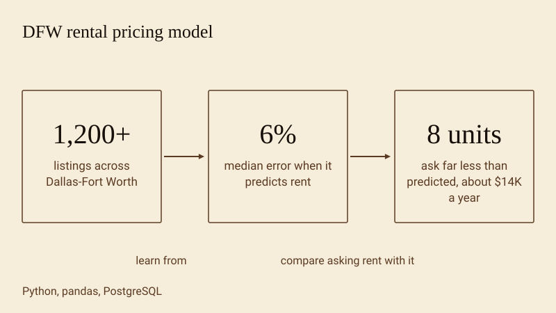
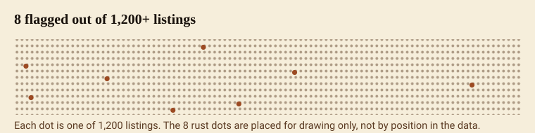

Data project
DFW rental pricing model
A model that predicts Dallas-Fort Worth rents, then checks each asking rent against it to find units priced well below what they should be.
- No public link.

By the numbers
- 1,200+listings it learned from
- 6%median error on rent
- 8underpriced units found
- $14Ka year those units were missing
The problem
Is this apartment priced right?
Rents across Dallas-Fort Worth vary a lot, and an asking rent is only one person’s guess at what a unit is worth. A listing priced too low leaves money on the table. A listing priced too high sits empty. Checking one unit by eye is easy. Checking a whole market is not.
The goal was a yardstick that works across the metro: predict what a unit should rent for from its listing, then see which asking rents sit far from the prediction.
How it works
- Collect1,200+ listings across Dallas-Fort Worth, kept in PostgreSQL and prepared with pandas.
- PredictThe model learns from the listings and estimates a rent for each one. Its median error is 6%.
- CompareEach asking rent is checked against the model’s estimate.
- FlagUnits that ask far less than expected are flagged. There were 8, worth about $14K a year in missed rent.
Reading the numbers
6% median error means half of the predictions land within 6% of the real rent. Type a rent to see what that band is in dollars.
8 flagged out of 1,200+ is under 1 percent of listings. Spread evenly, $14K a year is about $1,750 a unit a year, or roughly $146 a month. That is simple division of the two stated numbers, not a measured per-unit figure.
What it does not say
A median error leaves half the predictions further off than 6%. A flag is a lead to check, not a verdict. An asking rent is also not a signed lease.

What I did
- Trained it on 1,200+ listings.
- It predicts rent within 6% (median error).
- It found 8 underpriced units worth $14K a year.
What I learned
- Report the typical error, then its limitsA 6% median is a fair summary and a bad promise for any single unit. The page says both.
- A flag is only as good as the yardstickUnderpriced means far below the model’s estimate, so every flag is a question about the model first and the landlord second.